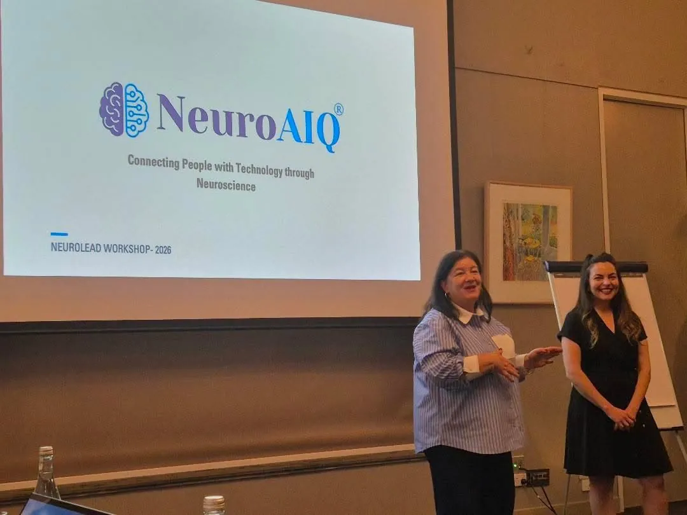
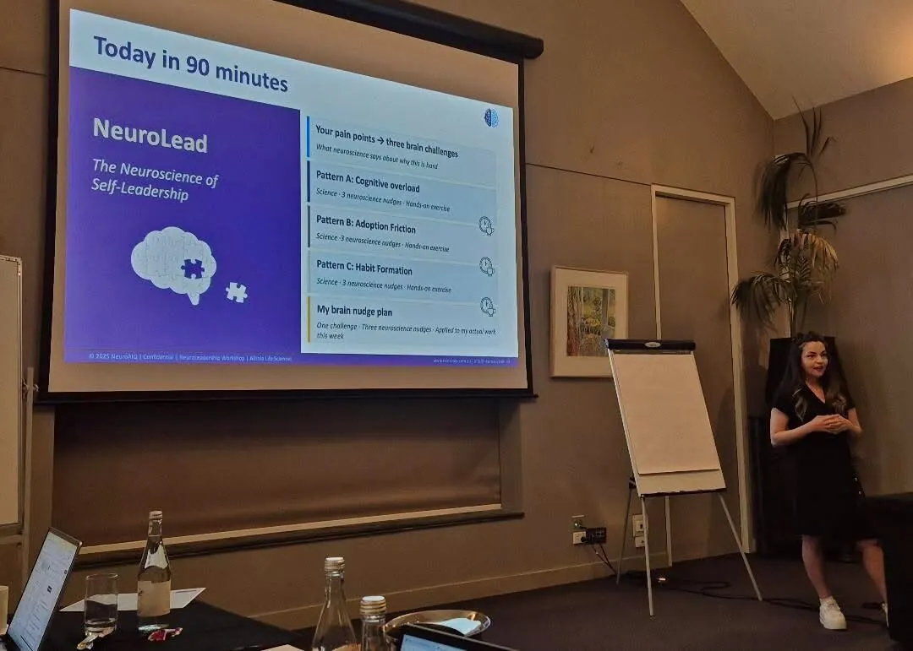
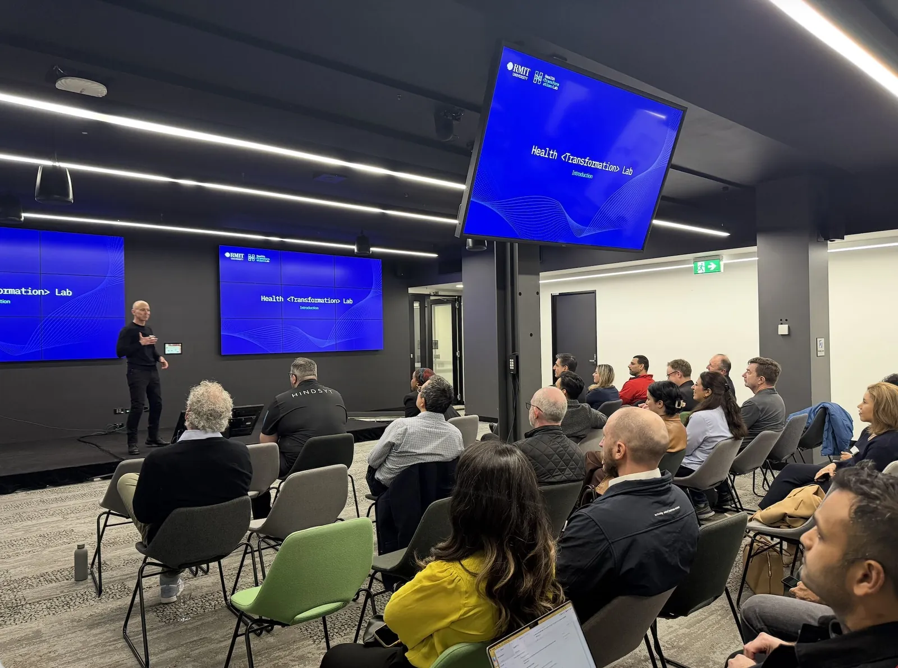
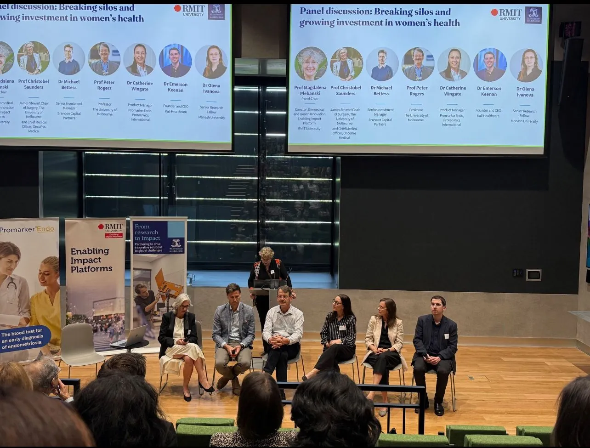
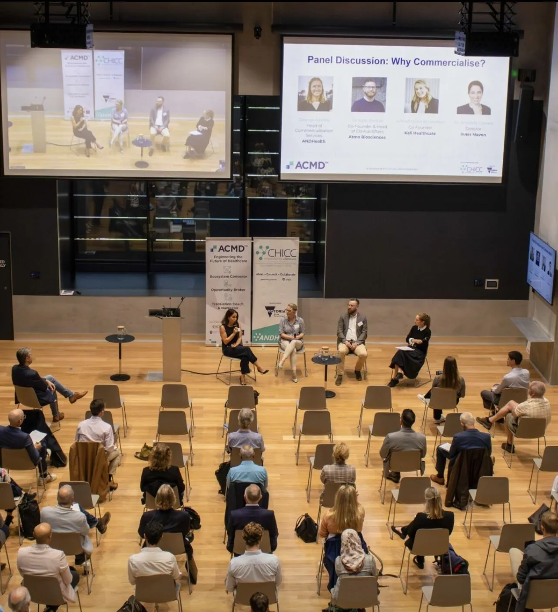
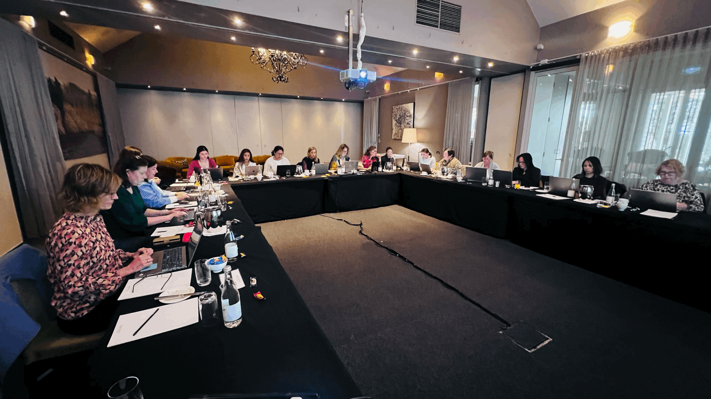
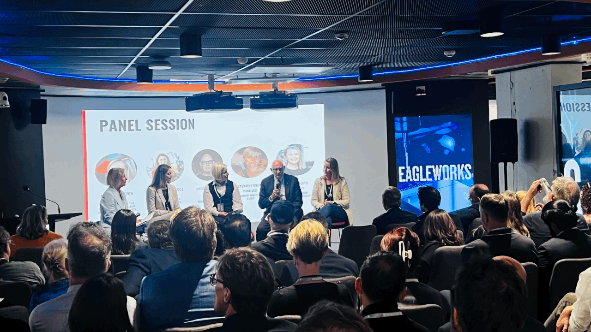
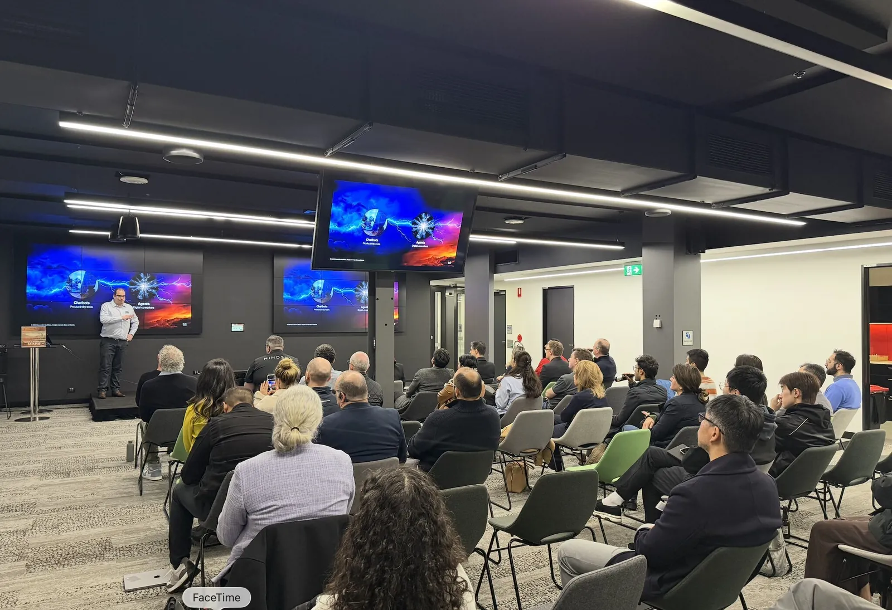
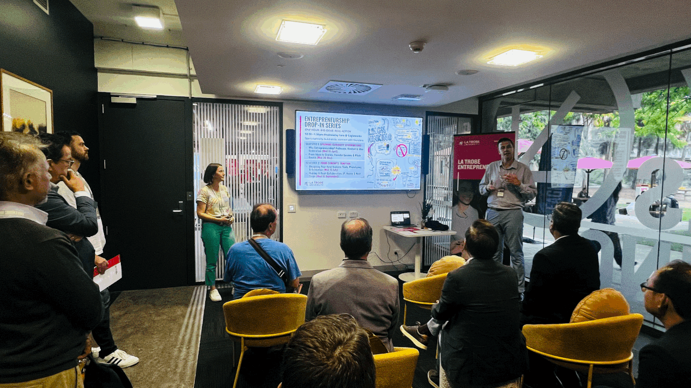

Events
Catch up on our past events and take a look at our upcoming ones
Published past events
From Neural to Digital: The Human & Machine Side of AI Adoption
Dr Mahtab Ameri explored the neuroscience of AI adoption alongside Sara Mirabi, AI and NLP PhD Researcher at Deakin University, who explained the mechanics of generative AI.
From Neural to Inclusive AI: Closing the Gap in Human-Centered AI Adoption
Dr Muneera Bano from CSIRO’s Data61 shared how bias enters data and algorithms, and what inclusive AI requires across design, governance and decision-making.

Our own event
NeuroLead Workshop
Connecting people with technology through neuroscience.
Where we have spoken and taken part

NeuroLead session







New events are announced on LinkedIn first.
Follow NeuroAIQ on LinkedIn for dates, or ask about bringing a session to your organisation.
Nothing is running right now.
Follow NeuroAIQ on LinkedIn for dates, or ask about bringing a session to your organisation.